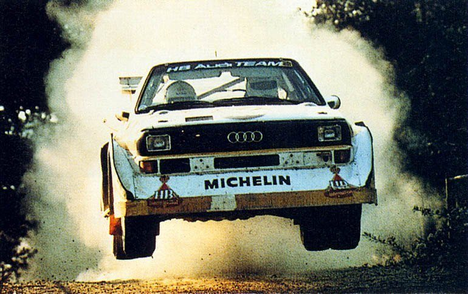
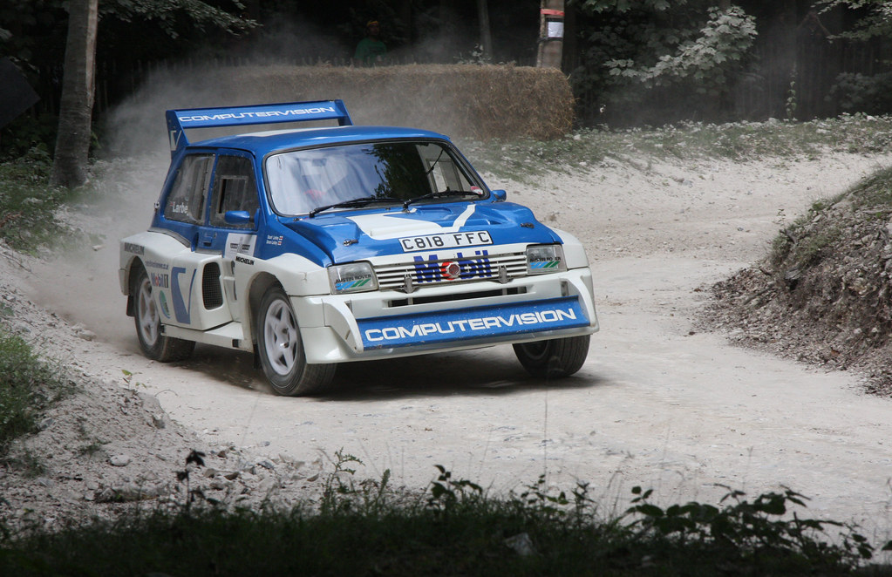
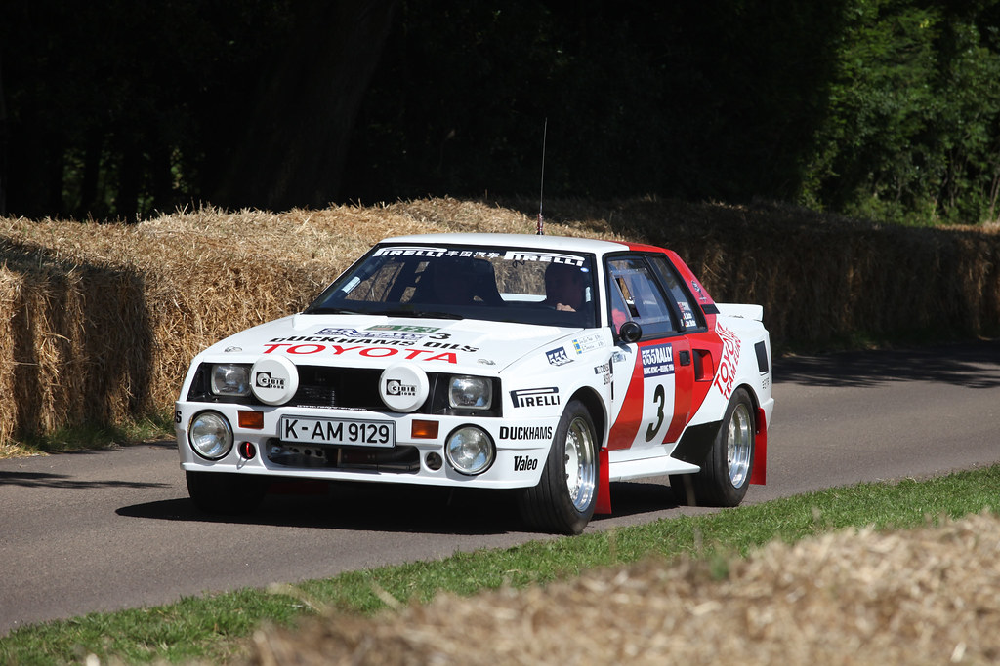
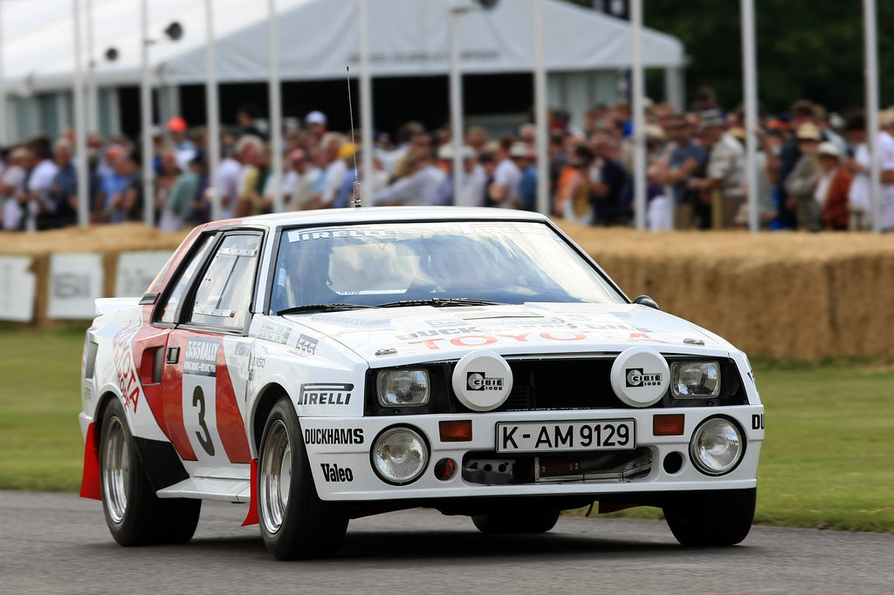
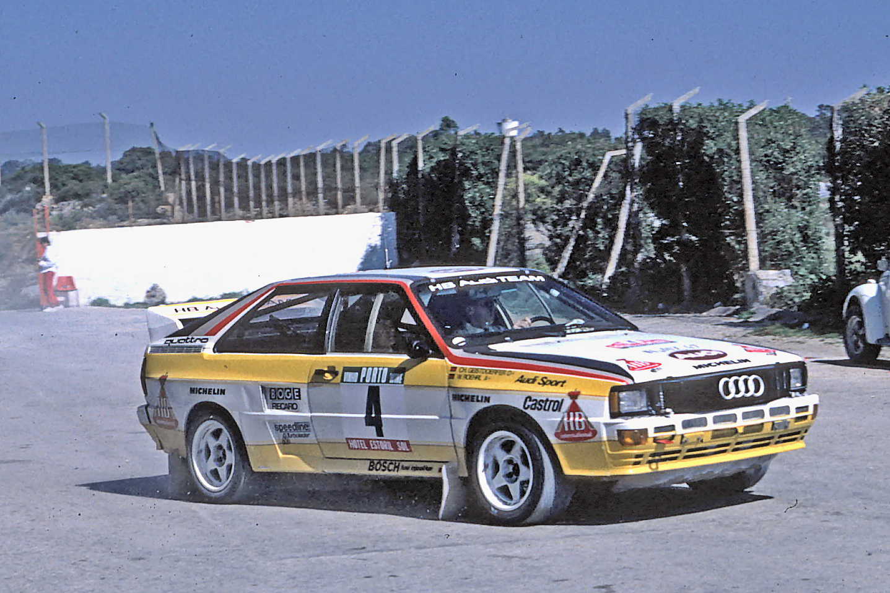

O Grupo B
O lendário Grupo B de rally, uma era que marcou a história do automobilismo com carros potentes e pilotos destemidos.
"O Grupo B foi uma era de ouro do rally, onde a engenharia e a coragem dos pilotos eram testadas ao limite."
O Grupo B de rally representa uma era inesquecível na história do automobilismo. Entre 1982 e 1986, essa categoria revolucionou o mundo das corridas com sua abordagem inovadora e liberdade técnica sem precedentes. Permitindo a construção de carros extremamente potentes e rápidos, o Grupo B foi um verdadeiro laboratório de inovação, desafiando os limites da engenharia automotiva e da habilidade dos pilotos. Embora sua existência tenha sido breve, devido aos riscos associados à sua extrema competitividade, o impacto e o legado deixados por essa era continuam a ressoar no esporte. Os carros icônicos, os pilotos destemidos e as competições emocionantes do Grupo B são lembrados com reverência e admiração, simbolizando uma época de ousadia e excelência no rally.
"Os carros do Grupo B eram verdadeiras máquinas de potência, com motores que frequentemente ultrapassavam os 600 cavalos."
Historia do Grupo B
O Grupo B foi uma categoria de rally criada pela FIA em 1982. Conhecida por permitir menos restrições técnicas, essa categoria resultou em carros extremamente potentes e rápidos. Apesar de seu curto período de existência até 1986, o Grupo B deixou um legado inesquecível no mundo do automobilismo.
Devido à sua natureza perigosa, tanto para pilotos quanto para espectadores, o Grupo B foi banido após uma série de acidentes fatais. No entanto, os carros e pilotos dessa era continuam a ser reverenciados pelos fãs de rally.
- 
- 
- 
Principais carros do grupo B
-

Audi Quattro
O Audi Quattro revolucionou o rally com sua tração integral, vencendo inúmeros campeonatos e tornando-se um ícone do Grupo B.
-

Peugeot 205 T16
Compacto e poderoso, o Peugeot 205 T16 conquistou dois títulos mundiais de rally, destacando-se pela sua agilidade e potência.
-

Lancia Delta S4
Combinando um motor turbo e supercharger, o Lancia Delta S4 era incrivelmente rápido e um dos carros mais avançados da época.
-

Ford RS200
Conhecido por sua excelente manobrabilidade e potência, o Ford RS200 é um dos carros mais emblemáticos do Grupo B.
-

MG Metro 6R4
O MG Metro 6R4 possuía um motor V6 aspirado e destacava-se pela sua performance e confiabilidade em terrenos difíceis.
Principais Pilotos
-
Walter Röhrl
Um dos pilotos mais talentosos da sua geração, Walter Röhrl conquistou o título mundial de rally duas vezes e é conhecido por sua precisão e habilidade ao volante. -
Henri Toivonen
Toivonen era um piloto finlandês extremamente talentoso, conhecido por sua velocidade e coragem. Sua carreira foi tragicamente interrompida por um acidente fatal em 1986. -
Michele Mouton
Mouton fez história como a primeira mulher a vencer uma etapa do Campeonato Mundial de Rally, pilotando um Audi Quattro com maestria. -
Björn Waldegård
Este piloto sueco era conhecido por sua consistência e habilidade em diversas condições, tendo conquistado várias vitórias importantes durante sua carreira.
Melhor de todos os tempos
O piloto com mais vitórias no Grupo B foi o finlandês **Juha Kankkunen**. Durante o período de existência do Grupo B, Kankkunen destacou-se como um dos pilotos mais talentosos e bem-sucedidos, acumulando várias vitórias em diferentes etapas do Campeonato Mundial de Rally (WRC). Juha Kankkunen começou sua carreira no Grupo B pilotando um Toyota Celica TCT, mas foi ao volante de um Peugeot 205 T16 que ele realmente se destacou. Em 1986, ele venceu o Campeonato Mundial de Rally, consolidando sua posição como o piloto mais vitorioso da era do Grupo B. Sua habilidade em lidar com os carros poderosos e exigentes dessa categoria, bem como sua capacidade de manter a calma sob pressão, foram fatores cruciais para seu sucesso. Além de seu título mundial em 1986, Kankkunen venceu várias etapas importantes, incluindo o Rally Safari no Quênia, o Rally da Finlândia e o Rally da Córsega. Seu legado no Grupo B é lembrado não apenas pelas vitórias, mas também pela bravura e técnica que demonstrou durante um dos períodos mais desafiadores e emocionantes do rally.
Curisidade do grupo B
-
O Grupo B permitia carros com praticamente nenhuma limitação de potência, resultando em veículos que chegavam a ter mais de 600 cavalos de potência.
-
Apesar do curto período de existência, o Grupo B é ainda hoje uma das eras mais lembradas e celebradas do rally.
-
Os eventos do Grupo B frequentemente atraíam grandes multidões, muitas vezes resultando em situações perigosas devido à proximidade dos espectadores com a pista.
- A tecnologia e os avanços desenvolvidos durante a era do Grupo B influenciaram significativamente o design e a engenharia dos carros de rally subsequentes.
Localidade das Corridas
As corridas do Grupo B aconteciam em diversas localidades ao redor do mundo, proporcionando desafios únicos em cada terreno. Entre os locais mais icônicos estavam o Rally de Monte Carlo com suas sinuosas estradas de montanha cobertas de neve e gelo, o Rally da Finlândia, conhecido por suas rápidas e onduladas estradas de cascalho, e o Rally de Portugal, famoso por suas estradas estreitas e público entusiástico. Outras provas importantes incluíam o Rally Safari no Quênia, com suas duras condições off-road, e o Rally da Córsega, com suas estradas tortuosas e perigosas. Esses eventos desafiavam não apenas a habilidade dos pilotos, mas também a durabilidade dos carros, contribuindo para a lenda do Grupo B.
Legado
legado do Grupo B é profundo e duradouro, marcando uma das eras mais emocionantes e influentes da história do rally. Embora tenha existido por apenas quatro anos, de 1982 a 1986, o impacto do Grupo B transcende o tempo, deixando uma marca indelével no automobilismo. Os carros do Grupo B eram verdadeiras máquinas de potência, com motores que frequentemente ultrapassavam os 600 cavalos. Essa liberdade técnica permitida pela FIA resultou em inovações e avanços tecnológicos que ainda hoje influenciam o design e a engenharia dos carros de rally. A tração integral, popularizada pelo Audi Quattro, tornou-se um padrão na indústria, melhorando a dirigibilidade e a segurança dos veículos. Além das inovações tecnológicas, o Grupo B também elevou o perfil do rally a novos patamares. As competições atraíam enormes multidões de fãs apaixonados, que se reuniam nas estradas para assistir aos carros mais rápidos e aos pilotos mais corajosos do mundo. Esta era de ouro do rally trouxe uma nova dimensão de espetáculo ao esporte, com suas corridas emocionantes e frequentemente perigosas. Infelizmente, os riscos associados à extrema potência dos carros e à proximidade dos espectadores resultaram em vários acidentes fatais, levando à proibição da categoria em 1986. No entanto, essa decisão reforçou a importância da segurança no automobilismo, influenciando regulamentações futuras que equilibram a necessidade de inovação com a proteção de pilotos e espectadores. Hoje, o Grupo B é lembrado com um misto de reverência e nostalgia. Os carros dessa era são celebrados em eventos históricos e exposições, enquanto os pilotos são considerados heróis por sua bravura e habilidade. Documentários, livros e videogames continuam a manter viva a memória dessa era incrível, inspirando novas gerações de entusiastas do automobilismo. Em suma, o legado do Grupo B é um testemunho da ousadia, inovação e paixão que definem o espírito do rally. Apesar de seu fim prematuro, o Grupo B continua a ser uma referência inigualável na história do automobilismo, um símbolo de um tempo em que a tecnologia e a coragem se encontraram no auge de suas capacidades.